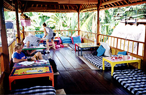

Sent: 22 Oct 99 19:58 PDT
web version, with a music clip
|
|
| Prior Trav-E-Log: You Ain't Gonna Believe... | Bali is Mt. Agun, and scenery, and people and... |
(Note:) This is the 2nd in a series of Trav-E-Logs© sent while traveling in S.E.Asia between Oct 16, 1999 and Jan 22, 2000.Hi Folks,
My, what changes from 7 years ago. I've met very few Aussies, in contrast to my first trip here. (The politics in Timor does effect tourism from down under.) Then, I only met one American in 5 days of Bali; now it appears about 30% of tourists are from the USA. One would think the mid April time frame of my last trip, just after the rainy season, would be more attractive than October. Go figure. Maybe we just have more disposable income now. Oh the joys of being overseas. Everyday the exchange rate gets worse from a traveler's standpoint. The value of my US traveler's checks has dropped 20% in 5 days. And I expect Bali is about the cheapest place I will visit in the next 3 months.
We didn't have rain for 2 days, and the mosquitoes came out with a vengeance. The sun is shining an average of 5 to 7 hours a day during this, the rainy season. Of course the higher elevations attract more clouds. But the heat of the day (88+ F) is only from 11:30 AM to 3 or 4 PM, so relief is always within sight.
Spent several days on the tourist track with two Germans, Manfred and Frank, and a Brit, Michelle. We all had similar tastes, and successfully modified the official tour itinerary in situ. How interesting, comparing 3 tour guide notes in two languages. On this trip, Manfred and I bought salak, while Michelle bought durian, though the latter smelled so bad I decided against the taste test. Have also taken in a couple of traditional dance and music performances in the evenings, and drug out the fiddle in a couple of places.
Speaking of music, I purchased an audio tape of Sundanese music (from Java) 7 years ago. The album features flute and gamelan, and to my amazement, is still heard several times a day here in Bali. Now I have it on CD also. Click here to download my favorite track, "Karedok Leunca". (This may take a few minutes to load, but you can save and play it over while viewing other pages.)
As I became templed out, started planning onward travel to Lombok and Sumbawa. But then I discovered the Pondok Pekak Resource Center in UBUD, a fantastic place to meet other travelers, buy lunch, and check out the library filled with books on anything Balinese, Indonesian, or even Southeast Asian. Classes are also taught in language and Balinese Arts, such as dance and gamelan, a traditional instrument. Don't want to wait for the next Indonesian class to start, but found an excellent textbook, which I have started to use. So now I may just stay here a few more days and see how the studies go.
Just 90 more days ....
Bill